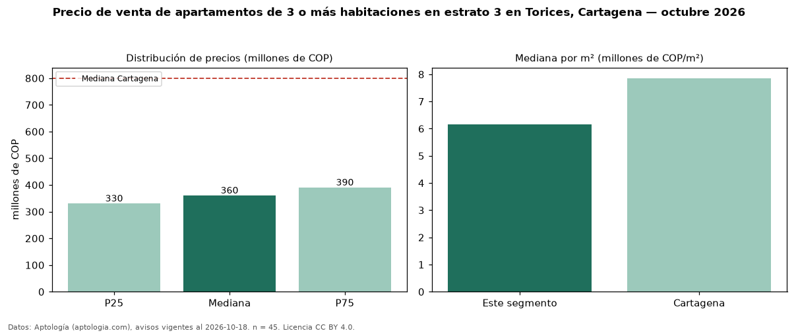

Precio de venta de apartamentos de 3 o más habitaciones en estrato 3 en Torices, Cartagena — octubre 2026
Con 45 avisos vigentes, el precio mediano de apartamentos de 3 o más habitaciones en estrato 3 en venta en Torices, Cartagena es COP 360 millones. Frente a la mediana de los apartamentos en estrato 3 en venta de Torices (COP 348 millones, n = 84), queda 4 % por encima; este segmento reúne el 54 % de esos avisos. Por metro cuadrado, la mediana es COP 6,16 millones/m² (n = 44), 1 % por debajo de los apartamentos en estrato 3 en venta de Torices (COP 6,20 millones/m²). El área mediana anunciada es 57 m². La administración mediana declarada es COP 311.600 al mes (n = 35). La mediana de todos los apartamentos en venta de Cartagena es COP 800 millones (−55 % de diferencia). La mitad central de los avisos va de COP 330 millones a COP 390 millones (razón 1,2), una dispersión baja. Datos: Aptología (aptologia.com), CC BY 4.0 — https://www.aptologia.com/venta/cartagena/torices. Archivos: PDF, CSV con las cifras y gráfica PNG.

| Avisos únicos | 45 |
|---|---|
| Percentil 25 | COP 330.000.000 |
| Mediana | COP 360.000.000 |
| Percentil 75 | COP 390.000.000 |
| Mediana por m² | COP 6.157.280 |
Fuente: avisos vigentes de portales inmobiliarios recopilados por Aptología, deduplicados (mínimo 30 avisos únicos por celda). Precios pedidos, no cerrados. Fecha: 2026-10-18.